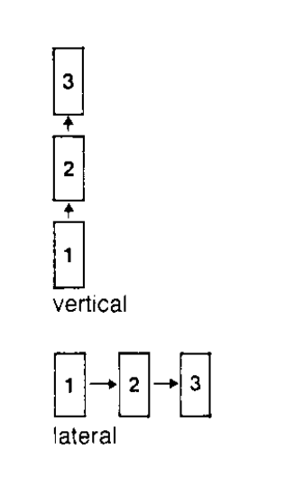

cualquier modo de valorar una situación es sólo uno de los muchos modos posibles de valorarla. El pensamiento
lateral explora estas alternativas mediante la reordenación de la información disponible.

El enfoque y buscqueda de alternativas
El pensamiento lógico busca el mejor enfoque para ciertas idea, en cambio el pensamiento lateral busca la mayor
cantidad de enfoques posibles, sin valorar lo efectos prácticos de estos. En cambio la busquéda de enfoques en
el pensamiento vertical es interrumpida en tanto se dé con un enfoque satisfactorio. Se suele fijar una cantidad de alternativas.
En el pensamiento lateral:
Pueden obtenerse varias alternativas, para luego volver al análisis de las más
satisfactorias.
Una de las alternativas encontradas puede convertirse en punto de partida hacia nuevas
ideas.
Una de las alternativas encontradas constituye en sí misma, sin mayor elaboración, una
solución satisfactoria.
Una de las alternativas provoca una reordenación de la información y el nuevo modelo
constituye una solución perspicaz.
Figuras geometricas
A continuación se presentan diferentes figuras y se provee de al menos cuatro definiciones